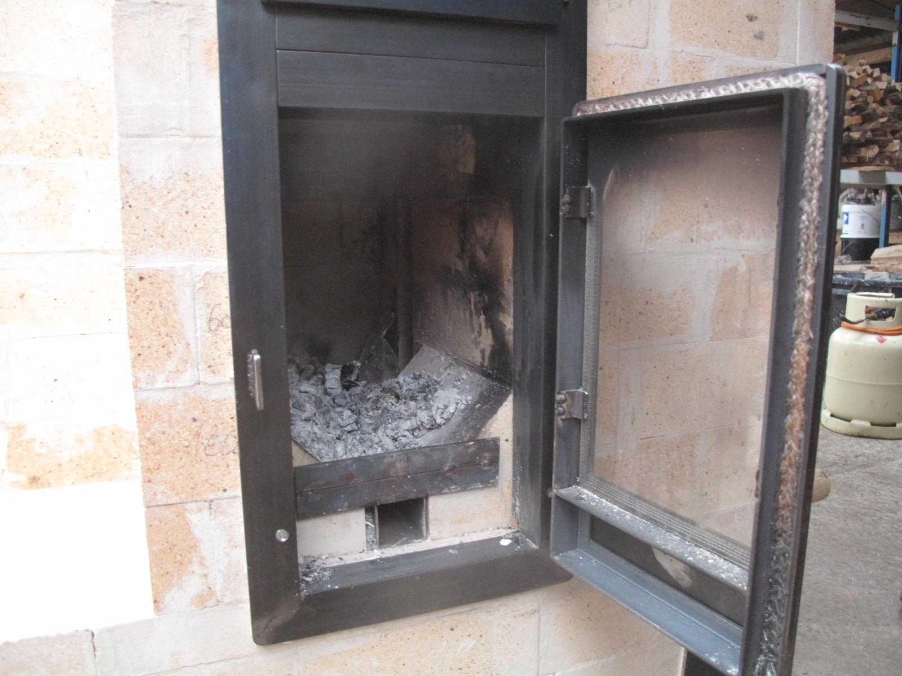

Les plans > Le B14 V2
Plan
Un poêle brûlant 14kg de bois par flambée : le B14, V2
Introduction
Le B14, c'est notre poêle "tout terrain". Dans la configuration présentée ici, il est raccordé à un mur chauffant qui lui permet de rayonner à hauteur d'homme tout en se faisant discret.
Avec 14 kg de bois par chargement, c'est un poêle qui répond aux besoins de chauffage de beaucoup d'habitations (mais pas toutes!). Le four noir est très grand et permet une utilisation permanente comme moyen de cuisson pour une famille. Pendant la flambée, il peut servir pour cuire des pizzas.
La "plancha" sur le dessus ne monte pas à des températures très élevées (environ 150°C au maximum), mais sert surtout à maintenir l'étanchéité et à permettre l'accessibilité permanente du poêle. En outre, elle permet des cuissons lentes ou le séchage de fruits et légumes sur des claies.
Un objectif : la durabilité
Cette nouvelle version est équipée de notre nouveau coeur de chauffe renforcé : Le Batchblock. Ce coeur de chauffe est renforcé par une armature métallique qui limite sa dilatation et empêche les mouvements latéraux des briques. Cette précaution n'est PAS superflue et est utilisée par les poêliers les plus expérimentés que nous connaissons (Vital BIES en France ainsi que Kirpichiki en Russie et certains poêliers neerlandais). Tout le coeur est maçonné avec des linteaux (longues briques) pour éviter les points faibles des joints et pour faciliter la construction.
Autour de ce coeur se trouve une deuxième peau qui ne fissurera pas car elle est soumise à des températures bien inférieures.
Le mur de chauffe peut être construit en simple peau et en matériaux non réfractaires car les températures y sont beaucoup plus basses.


Vue 3D du poêle avec et sans mur de chauffe.
Fiche technique :
- Chargement de bois : 14 kg
- Puissance : 4400W avec 2 flambées par jour
- Poids (avec la métallerie, sans le mur de chauffe) : environ 1100 kg
- Charge sous le poêle (sans compter le mur de chauffe): 1800 kg/m2
- Diamètre minimum du conduit de raccordement : 180 mm
- Dimensions : 845x725mm au sol (sans le banc) et 125 cm de haut
- Temps de travail sur chantier (estimé, hors métallerie, hors fumisterie) : 100 à 150h
- Section du système : 31400 mm2
- SIA de la cuisinière sans le mur et sans conduit de raccordement : 2,5 m2
- SIA à ajouter à la cuisinière : 5,5 m2 maximum
- Version : 2
- Date de publication : 16 Mars 2018
- Fichier Sketchup : B14_V2_031618.skp
- Débit : __
- Manuel en .pdf : manuel_B14_V2_031718.pdf
Versions précédentes :
-

-

- 
La version précédente du B14 : le P14
Les objectifs principaux :
- Cuisson :
- Il doit y avoir un four noir utilisable pendant et après la flambée ;
- La plancha doit permettre des cuissons douces ou le séchage de fruits et légumes ;
- Longue durée de vie dans le cadre d'un usage quotidien
- 10 ans d'usage (environ 4000 flambées) au minimum ;
- Le foyer doit résister à des chocs de bûches occasionnels ;
- Supporte 3 flambées par jour sans fissurations et en restant fonctionnel ;
- La plancha ne doit pas flamber sous l'effet de la chaleur ;
- L'ensemble du poêle doit être accessible pour l'entretien et le nettoyage ;
- Chauffage :
- Doit pouvoir chauffer un volume correct avec 2 ou 3 flambées par jour dans le cas le plus froid ;
- Doit avoir une inertie d'au moins 12h ;
- Adaptabilité :
- La forme du système de récupération de la chaleur doit être libre. Ça peut être un mur droit ou coudé, une cloche simple, un banc avec mur de chauffe, etc..
- Haut rendement global
- Rendement global moyen (sur une flambée complète) supérieur à 80% (PCI) ;
- Température des fumées toujours inférieure à 200°C dans le conduit de cheminée à 1 m de la sortie du poêle ;
- Excès d'air moyen (sur une flambée complète) inférieur à 2,5 ;
- Durée de flambée d'une heure (d'après la norme EN15250), soit 1h30 de l'allumage à la fermeture des clapets ;
- Présence d'un clapet d'obstruction étanche à 5% dans le conduit d'évacuation. Le clapet doit être facile d'accès ;
- Faible pollution atmosphérique
- Rendement de combustion moyen supérieur à 98% (taux de monoxyde de carbone inférieur à 500 ppm moyen dilué) ;
- Le poêle doit supporter des flambées violentes (taux de d'oxygène inférieur à 7% au moment du pic et/ou taux d'oxygène moyen inférieur à 11%) sans s'emballer ;
- Les allumages par le bas ne doivent pas entrainer de pollution supérieure à 1000 ppm de CO dilué moyen ;
Usage :
Voir la page dédiée au Manuel d'utilisation.
Remarques :
Ce poêle sera construit et testée la semaine du 19 au 25 Mars.
Concernant la construction :
- Le conduit de raccordement peut être plus grand que 180 mm, mais dans ce cas il faut prévoir un adaptateur vers le tube du diamètre existant. Il est aussi possible de raccorder ce poêle à un boisseau en terre cuite de dimensions internes minimale 180x180 mm.
- Le banc doit impérativement respecter les règles de construction des cloches :
- À chaque changement de direction, les gaz doivent avoir suffisament d'espace pour qu'il n'y ait pas de restriction. Il faut au minimum 1,5 fois la section du sytème dans les virages à 90° et 2 fois dans les virages à 180°.
- La SIA (surface interne absorbante) doit être calculée d'après les règles décrites dans l'article sur les cloches. En particulier, il faut prendre en compte toutes les surfaces internes de cheminée d'évacuation non isolées.
- Le mur de chauffe n'a pas besoin d'être en matériaux réfractaires. Si il est construit en simple peau, nous recommandons l'ajout d'un enduit (terre, chaux, peu importe) tramé avec une maille en fibre de verre de 10x10 mm. Cela permet d'éviter que des fissures apparaissent.
- Le poêle possède 2 peaux de briques entre lesquels un joint de dilatation en carton est introduit. Pour chaque rangée, on maçonne d'abord la peau extérieure puis la peau intérieure. On comble l'espace entre la peau extérieure et le joint de dilatation avec un mortier de terre. Cela permet un meilleur transfert de la chaleur vers l'extérieur.
Images :


Ce poêle est équipé du nouveau coeur de chauffe renforcé : le Batchblock
Les matériaux et prix :
1. La commande à effectuer chez le briquetier :
Les prix affichés ici sont les prix (pour 2018) du briquetier PRSE avec lequel nous travaillons. Nous ne prenons aucune marge sur les articles ci-dessous. Vous pouvez très bien commander vos briques chez un autre fabricant. Cependant, les briques de PRSE sont utilisées par beaucoup de poêliers car elles sont d'extrèmement bonne qualité. C'est de plus une entreprise locale implantée en Drôme.
Attention, les matériaux nécessaire à la réalisation du mur de chauffe ne sont pas inclus !
| Désignation | Nombre | Prix unitaire TTC | Prix TTC |
|---|---|---|---|
| Brique de 220x110x60 mm, 40% d'alumine | 200 (20 briques supplémentaires sont incluses) | 1,69€ | 338€ |
| Linteau 600x110x60 mm, 40% d'alumine | 45 (2 linteaux supplémentaires sont inclus) | 9,78€ | 440,1€ |
| Coulis réfractaire REFRACOL 240, par seau de 25 kg | 2 | 39,14€ | 78,28€ |
| Laine céramique Superwool 607HT, 128 kg/m3, 1000x610x13mm | 2 m | 9,48€ | 18,96€ |
| Palette perdue houssée 1,00x1,20 m | 2 | 21,6€ | 43,2€ |
| Total, sans livraison | 918,54€ |
La livraison pour cette cuisinière nécessite deux palettes. Les tarifs (HT) de livraison depuis l'usine du briquetier PRSE sont donnés ici : Tarif_Transport_2018_PRSE.pdf. Pour une palette, ils varient entre 170 et 325€ TTC en fonction du lieu de livraison. Des frais supplémentaires s'appliquent dans les zones particulières (haute montagne, monaco, corse, etc..).
Une option pour que le briquetier découpe les briques en usine sera proposée prochainement.
2. Le débit des briques :
Le débit des briques est donné en considérant que la plupart des chutes sont réutilisées. Il donc très important de :
- Découper les briques en partant des plus grandes. Une partie des chutes résultantes seront réutilisées.
- Découper sur le trait de coupe pour que l'épaisseur de la lame soit répercutée des deux cotés.
- Prévoir une marge d'au moins 10% de briques supplémentaires lors de la commande pour anticiper les erreurs de coupe.
3. La métallerie :
Les différents éléments de la métallerie pour le B14 V2 sont les suivants :
- Clapet de démarrage
- Clapet d'obstruction
- Arrivée d'air secondaire "Cobra"
- Porte du foyer (vitrée) avec arrivée d'air
- Porte du four (non vitrée)
- Double cadre pour la porte du four et du foyer
- Cornières de fixation du cadre
- Plancha
- Cadre de la plancha
- Barre de protection
Les prix donnés correspondent aux prix approximatifs de revient en prenant en compte que les profilés métalliques ne sont vendus qu'en barre de 6m. Ils sont là pour vous aider dans la construction et le choix du poêle que vous allez auto-construire.
Les fournisseurs pour les thermomètres et les vitres réfractaires sont indiqués dans l'article Matériaux et fournisseurs.
| Désignation | Nombre/dimension | Prix |
|---|---|---|
| Tôle de 5 mm : 800x700, 315x240, 145x150, 185x185 | 60€ | |
| Cornière de 50x50x5 mm | 10500 mm | 44€ |
| Fer plat de 50x5 mm | 740 mm | 4€ |
| Fer plat de 70x5 mm | 520 mm | 3€ |
| Fer plat de 30x5 mm | 850 mm | 3€ |
| Tube carré de 60x60x2 mm | 510 mm | 5€ |
| Tube carré de 45x45x2 mm | 110 mm | 2€ |
| Tiges filetées diamètre 12 mm, longueur 1220 mm | 4 unités | 18€ |
| Té de 40x40x5 mm | 2000 mm | 9€ |
| Paumelles MAROC de 80x12 mm | 4 unités | 10€ |
| Thermomètres à tige | 2 unités | 20€ |
| Fer carré de 8 mm | 4000 mm | 5€ |
| Tube de diamètre ext. 180 ou 193 mm | 400 mm | 15€ |
| Fer rond de 12 mm de diamètre | 600 mm | 2€ |
| Vitre réfractaire | 265x385x4 mm | 40€ |
| Tresse plate autocollante de 10x2 mm | 1,5 m | 10€ |
| Tresse ronde de 15 mm de diamètre | 3 m | 15€ |
| Consommables (disques, baguettes de soudure, mèches, etc..) | 100€ | |
| Total | 365€ |
3. Récapitulatif
Plusieurs choix sont possibles dans l'auto-construction de votre cuisinière de masse. Vous pouvez la fabriquer en auto-construction totale. Dans ce cas :
| Désignation | Prix TTC |
|---|---|
| Matériaux chez le briquetier | 918,54€ |
| Livraison | Entre 170 et 325€ |
| Matériaux pour le mur de chauffe | Variable |
| Matériaux pour la métallerie | 365€ |
| Total | Entre 1455 et 1610€ sans compter le mur de chauffe |
Vous pouvez aussi faire fabriquer la métallerie par un artisan chaudronnier. Dans ce cas :
| Désignation | Prix TTC |
|---|---|
| Matériaux chez le briquetier | 918,54€ |
| Livraison | Entre 170 et 325€ |
| Matériaux pour le mur de chauffe | Variable |
| Matériaux pour la métallerie | 365€ |
| Main d'oeuvre métallerie (estimation, hors livraison) | 1500€ |
| Total | Entre 2955 et 3110€ sans compter le mur de chauffe |